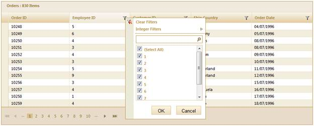

1. Create a model in the application (Refer to Getting Started>Adding a Model to the Application).
2. Add the following code in the Index.aspx file to create the Grid control in the view.
|
View [ASPX]
<%=Html.Grid<Order>("Grid1","GridModel", columns => { columns.Add(p => p.OrderDate).Format("{0:dd-MM-yyyy}"); })%>
|
|
View [cshtml]
@(new HtmlString(Html.Grid<Order>("Grid1","GridModel", columns => { columns.Add(p => p.OrderDate).Format("{0:dd-MM-yyyy}"); }).ToString())) |
3. Create a GridPropertiesModel in the Index method. Use the ActionMode property to set the JSON mode.
4. Use the AllowFiltering property to enable the filtering operations.
|
[C#] public ActionResult Index() { Caption = "Orders", AutoFormat = Syncfusion.Mvc.Shared.Skins.Sandune, AllowFiltering = true, ActionMode = ActionMode.JSON
};
|
5. To work with filtering actions, create a Post method for Index actions and bind the data source to the grid as given in the below code.
|
Controller [AcceptVerbs(HttpVerbs.Post)] public ActionResult Index(PagingParams args) { IEnumerable data = new NorthwindDataContext().Orders.ToList(); return data.GridJSONActions<Order>(); } |
6. Run the application. The grid will appear as shown below:

Figure 124: Filtering Enabled Grid
 Filter
Customization
Filter
Customization